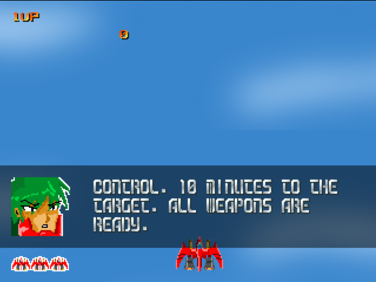
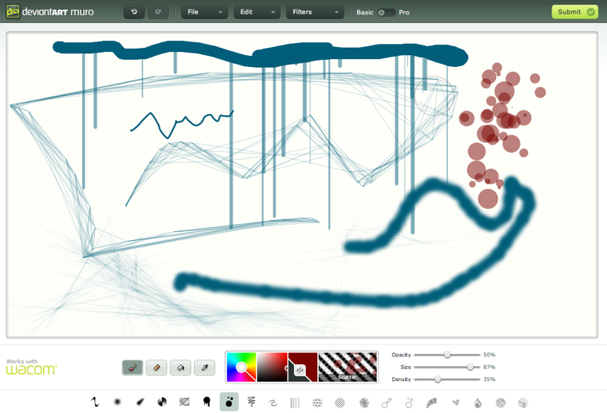
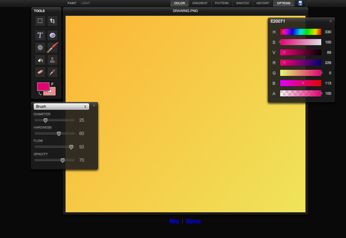
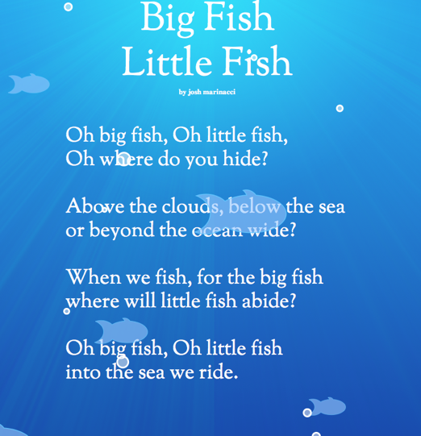
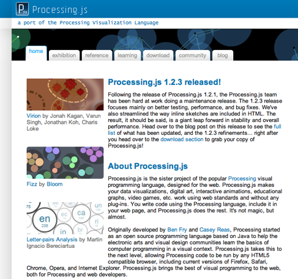
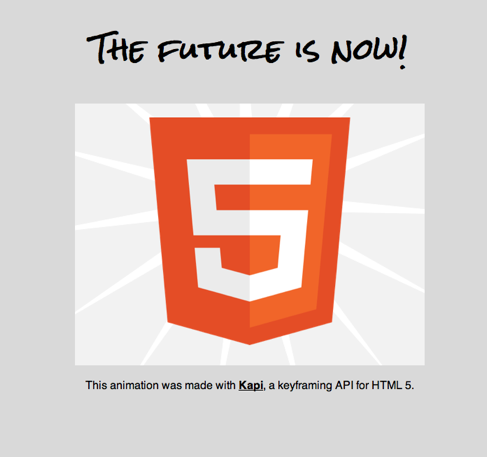
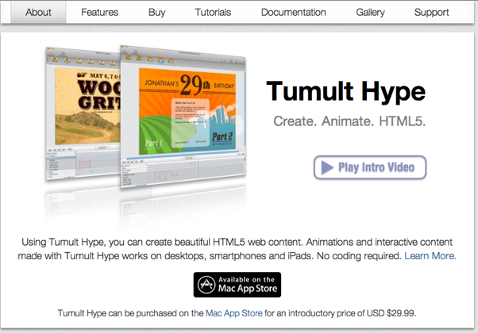

Now that you know a lot about how canvas works, lets explore what it's actually good for and some useful libraries.
Graphs and Charts
RGraph is a free for personal use charting library for canvas. It has many different chart forms.
www.rgraph.net

ZingChart is a hosted charting library with a visual builder. It renders in many different output formats, including Canvas, and can handle large datasets.
http://www.zingchart.com/

Game Engines


Akihabara Game Engine
www.kesiev.com/akihabara

ImpactJS: fast commercial game engine
impactjs.com

Cocos2D: partial javascript port of the Cocos iPhone SDK
cocos2d-javascript.org

Pirates Love Daises is a tower defense game done entirely in canvas.
PiratesLoveDaises.com
Drawing Programs

Muro: Deviant Art's webbased painting program.
deviantart.com

SketchPad: another drawing program with a very classy UI
mugtug.com/sketchpad/
Custom Fonts

Ben Joffe's canvas font script. Converts a font on your computer into
an image which can be rendered with canvas. This lets you use a custom font on computers that don't have that actual font installed.
benjoffe.com

A canvas enriched children's poem. The text is markup and the graphics are in a transparent canvas.
Josh On Design
Tools and Libraries

EaselJS: A graphics library loosely based on Flash's display list.
Easel JS

A javascript port of the Java Processing graphics library. Great for
interactive displays and art.
Processing JS

Kapi: a keyframing javascript library.
JeremycKahn.github.com/kapi/

canvg: an SVG renderer built with canvas
code.google.com/p/canvg/

Pixastic is a photo editor and image processing library. It has tons of Photoshop style filter effects
Pixastic.com
Visual Tools

Hype by Tumultco, a commercial drawing and animation tool
which outputs straight HTML 5
tumultco.com/hype/

Amino : open source JavaScript and Java scenegraph.
GoAmino.org

Leonardo Sketch: open source drawing tool which outputs to canvas and Amino code, among other formats. It is extensible and has some neat social features.
LeonardoSketch.org